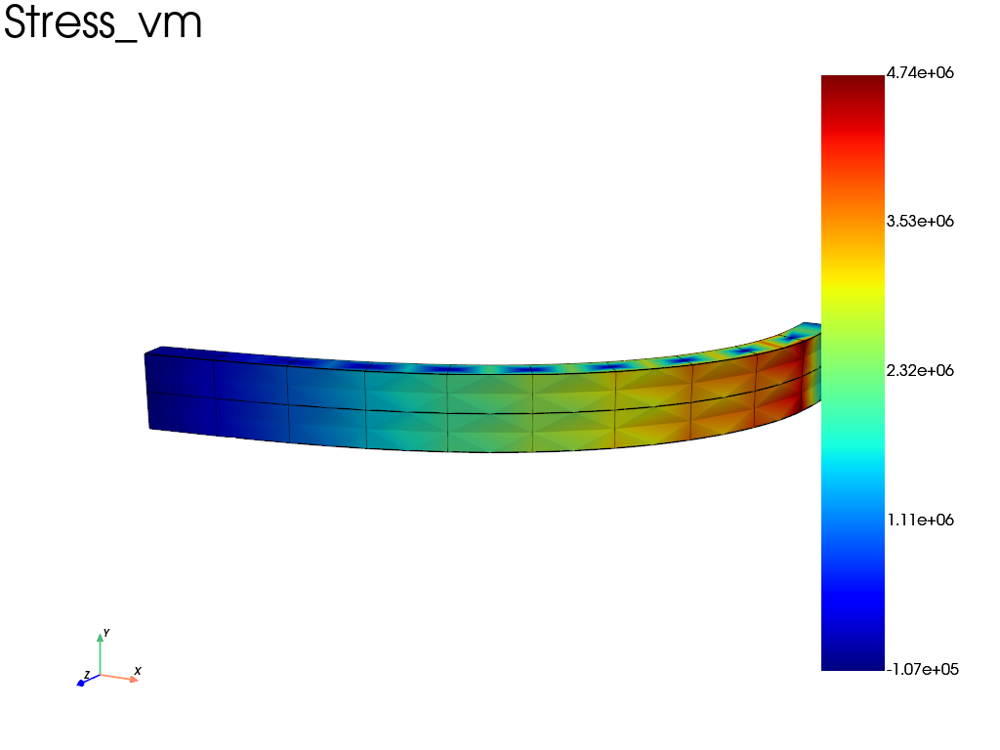
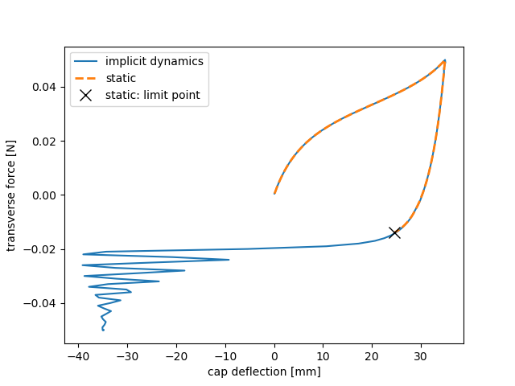

Note
Go to the end to download the full example code.
Snap-through of a compressed Neo-Hookean blade (static vs implicit dynamics)
Companion of the Neo-Hookean cantilever example, where a soft cantilever is bent by a force in a plain static analysis. Static force control is enough there because the equilibrium path is monotonic. This example shows the case where it is not: a limit point, beyond which no neighbouring equilibrium exists and the structure jumps. The jump is a dynamic event, and implicit dynamics is then necessary.
A soft, nearly-incompressible blade is clamped at its base. A rigid cap
(fedoo.constraint.RigidTie) on its top face carries two dead forces:
an axial compressive force
Pabove the Euler buckling load (\(P_{cr} = \pi^2 EI / 4L^2 \approx 0.2\) N): the blade has two stable buckled states, bent towards +X or towards -X;a small transverse force, first ramped to
+F(the blade buckles towards +X), then reversed to-F.
During the reversal the blade stays on the +X side until that state ceases to exist, then snaps to the -X side. The same loading is solved twice:
static: Newton follows the path up to the limit point, where the tangent stiffness becomes singular. The time step is cut down to
dt_minand the analysis stops;implicit dynamics (
pb.set_time_integratorwith a Newmark scheme): the inertia termM/(beta*dt^2)keeps the effective tangent regular, the blade snaps through, rings, and settles on the -X side. The time step is still cut a few times during the snap, which is a violent event.
Since no physical damping is modelled, the ringing is removed by the numerical
dissipation of the Newmark scheme: gamma = 0.75 > 1/2 damps the high
frequencies, with beta = (gamma + 1/2)^2 / 4 for unconditional stability.
Cross-check: the loading is symmetric, so the final state under -F must be
the mirror image of the state reached under +F.
import matplotlib.pyplot as plt
import numpy as np
import fedoo as fd
Parameters
L, B, H = 0.05, 0.005, 0.002 # blade length / width / thickness [m]
E, nu = 60e6, 0.49 # Young's modulus [Pa], Poisson's ratio
mu = E / (2 * (1 + nu))
kappa = E / (3 * (1 - 2 * nu))
rho = 1000.0 # density [kg/m^3]
P = 0.25 # axial compressive force on the cap [N] (~1.3 Pcr)
F = 0.05 # transverse force amplitude [N]
T_BUCKLE = 1.0 # P and +F are ramped on [0, T_BUCKLE]
T_REVERSE = 2.0 # +F -> -F on [T_BUCKLE, T_REVERSE], P held
T_END = 2.5 # hold, the blade settles
DT = 0.01
GAMMA = 0.75 # Newmark numerical damping (> 1/2)
BETA = (GAMMA + 0.5) ** 2 / 4 # unconditionally stable
def axial_load(t):
"""Fraction of P applied at time t [s]."""
return min(t / T_BUCKLE, 1.0)
def transverse_load(t):
"""Fraction of F applied at time t [s]: 0 -> +1 -> -1 -> hold."""
if t < T_BUCKLE:
return t / T_BUCKLE
return max(1.0 - 2.0 * (t - T_BUCKLE) / (T_REVERSE - T_BUCKLE), -1.0)
fd.ModelingSpace("3D")
# bending takes place in the (X, Z) plane, about the weak axis of the section
mesh = fd.mesh.box_mesh(
nx=2,
ny=3,
nz=11,
x_min=-H / 2,
x_max=H / 2,
y_min=-B / 2,
y_max=B / 2,
z_min=0,
z_max=L,
elm_type="hex20",
)
bottom = mesh.find_nodes("Z", 0) # clamped base
top = mesh.find_nodes("Z", L) # tied to the rigid cap
material = fd.constitutivelaw.Simcoon("NEOHC", [mu, kappa], name="neohookean")
material.set_density(rho) # only used by the dynamic analysis
wf = fd.weakform.StressEquilibrium(material, nlgeom="UL")
Same model and loading, static or dynamic
def solve(dynamic, output=None):
"""Return the output and the (time, transverse force, deflection) history."""
assembly = fd.Assembly.create(wf, mesh)
pb = fd.problem.NonLinear(assembly)
if dynamic:
pb.set_time_integrator(
fd.time.SECOND_ORDER, fd.time.Newmark(beta=BETA, gamma=GAMMA)
)
pb.set_nr_criterion("Force", tol=1e-4, max_subiter=20)
pb.add_line_search(mode="safeguard") # validity filter, never throttles
results = None
if output is not None:
results = pb.add_output(output, assembly, ["Disp", "Stress"])
pb.bc.add(fd.constraint.RigidTie(top)) # rigid cap on the top face
pb.bc.add("Dirichlet", bottom, "Disp", 0) # clamp the base
# time_func receives the time factor t / tmax
pb.bc.add("Neumann", "RigidDispZ", -P, time_func=lambda tf: axial_load(tf * T_END))
pb.bc.add(
"Neumann", "RigidDispX", F, time_func=lambda tf: transverse_load(tf * T_END)
)
history = []
def record(problem):
ux = float(np.ravel(problem.get_dof_solution("RigidDispX"))[0])
history.append((problem.time, F * transverse_load(problem.time), ux))
try:
pb.nlsolve(
dt=DT,
tmax=T_END,
update_dt=True,
dt_max=DT,
dt_min=1e-5,
print_info=0,
interval_output=DT,
callback=record,
)
except RuntimeError as err: # time step below dt_min: no equilibrium found
print(f"analysis stopped at t = {pb.time:.3f} s: {err}")
return results, np.array(history)
print("--- static ---")
_, static = solve(dynamic=False)
print("--- implicit dynamics ---")
results, dynamic = solve(dynamic=True, output="results/neohookean_snap_through")
--- static ---
analysis stopped at t = 1.645 s: Current time step is inferior to the specified minimal time step (dt_min)
--- implicit dynamics ---
Post-processing
ux_buckled = dynamic[np.argmin(np.abs(dynamic[:, 0] - T_BUCKLE)), 2]
print(
f"\nstatic : lost at Fx = {static[-1, 1]:+.4f} N, ux = {static[-1, 2] * 1000:+.2f} mm"
)
print(f"dynamic : ux = {ux_buckled * 1000:+.2f} mm under Fx = {+F:+.3f} N")
print(f" ux = {dynamic[-1, 2] * 1000:+.2f} mm under Fx = {-F:+.3f} N (mirror)")
fig, ax = plt.subplots()
ax.plot(dynamic[:, 2] * 1000, dynamic[:, 1], "-", label="implicit dynamics")
ax.plot(static[:, 2] * 1000, static[:, 1], "--", lw=2, label="static")
ax.plot(static[-1, 2] * 1000, static[-1, 1], "kx", ms=10, label="static: limit point")
ax.set_xlabel("cap deflection [mm]")
ax.set_ylabel("transverse force [N]")
ax.legend()
plt.show()
results.load(results.n_iter - 1) # settled state on the -X side
results.plot("Stress", component="vm", data_type="Node", show=True)


static : lost at Fx = -0.0140 N, ux = +24.54 mm
dynamic : ux = +34.92 mm under Fx = +0.050 N
ux = -34.92 mm under Fx = -0.050 N (mirror)
/home/runner/work/fedoo/fedoo/fedoo/core/dataset.py:1167: PyVistaFutureWarning: The default value of `algorithm` for the filter
`UnstructuredGrid.extract_surface` will change in the future. It currently defaults to
`'dataset_surface'`, but will change to `None`. Explicitly set the `algorithm` keyword to
silence this warning.
mesh_to_show.separate_cells()
Total running time of the script: (2 minutes 4.344 seconds)